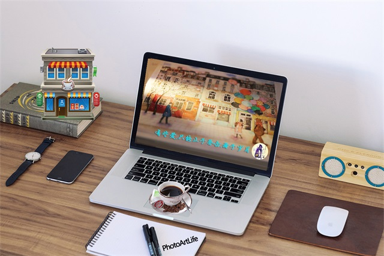
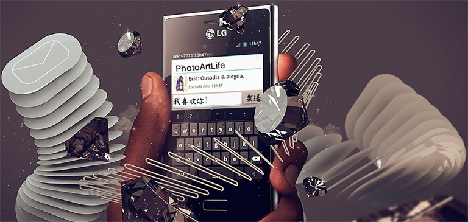

-
创作，即便满足虚荣也是一种活法！
如果不去创作，那和咸鱼有什么区别；这是我在读一篇微信杂文时记录下来的，生活中任何人随时随地都可以想出或者记下刹那的灵感，我们都可以被称为“作家”，若我们有心，纵使清贫也可以驾驭你喜欢的身份；最近迫不及待看了好几部上线的电影《小时代系列》《道士下山》《煎饼侠》等，我想导演和一些主要人物首先努力呈现给观众一部好的作品，背后演绎的故事很多是大家相似的写照或者称作缩影；台上三分钟，台下十年功；这句话最为简洁精辟！我不羡慕你的光环艳丽，因为你受的苦和泪水已经麻木了黑夜，这些只有相似的同频人才会懂吧！谈创作太官方，太高大上，记录和感动就好，实在的人自然不会介意。每一张图纸，一段视频，一个网站，一个APP等，都是创作欲的乐趣；这个世界太多美好，而鄙人生命有限，天下唯有亲友梦想和好姑娘不可辜负！每一张图稿，都可以反映一段时间的情绪，生活状态，产物；无论优与劣，她都是一种沉淀，对昨天的反思，明天的告白和未来的憧憬！
如果没有社交网络和许多所谓的平台，也许我们很难欣赏到许多美好的作品，但是它的盛行让你我迷惘沉迷了许多，开始之后普遍的我们渴望得到关注和评论更甚之点赞转载等，许多人都会得到一时的喜悦感和虚荣满足，自然很多时候这是创作的动力之一，但绝不是主要原因，很多都是捎带着的因素！虚荣心让彼此也靠近不少，筛选沉淀，自然也有许多隐姓埋名，但无关紧要，现存的优秀因为分享才有意义，而不在于到底有多高的标准冒出来。因为虚荣，才会有分享；因为创作，才会有循环的艺术！
该怎么活，很抱歉，我也不知道答案. . .
-
这么忙还有时间写作么？
有啊，其实人们并没有自己想象的那么忙碌，大部分人只是看起来很忙而已。忙碌带来的主要是身心的疲累，如果你忙活了一天，被工作搞得心烦意乱，想必也很难有心思再去跑步、健身或写作，你可能宁愿窝在沙发里看两小时电视，或傻乎乎的刷几个小时的朋友圈。大部分情况下，都不是人家「时间」的问题。在「没时间」这个问题上，「时间」承担了人类历史上最多的冤假错案。「时间」承担了人类历史上最多的冤假错案。 
听了一些创业者朋友的建议之后，我对写作节奏做了一点调整，大部分文章的草稿是周末的晚上写成的，然后利用一周内的零碎时间进行修整和完善，哪一篇先改好，就发哪一篇。这种调整让我在繁忙的工作之余，依然保持了不错的更新频率，一个月十几篇，挺好。时间或忙碌，永远都是借口，如果有内在的驱动力让你坚持去做一件事，你总能找到时间和空间把它办了，反之，你就会去做那些更轻松的，不费体力和脑力的事情，比如看美剧、看电影或疯狂的刷新微信、微博和知乎的时间线，或者，去欧洲浪，也可能是被美女程序员缠住了，也可能是出去浪了，当然，我们也不要排除江郎才尽的可能性。写作也是一样的道理，总有一少部分企业和个人认可作者的价值，并愿意为此支付一点费用。这样的行为，是支撑作者持续创作的动力之一。你长年累月的向湖里投掷石子，如果湖面从来都静悄悄冷酷的像面镜子，没一丝涟漪，没一点波动，谁都会崩溃的，你会对每一个遇到的人念念有词：刚开始我的内心是拒绝的，到最后它碎成了渣渣。这个世界永远是少数人推动着美好的事情发生并持续发展，剩下的人享受那些由于少数人付费而获得的免费服务。你是哪一种人呢？我愿意为那些美好的事物付费！部分思想来源于池老师的笔记，无论写作还是从事且他的岗位，忙都不是值得说出的借口，真的，看看你每天在智能手机上面花的时间有多少吧！我从未觉得自己就会成为一名“作者”，相比起软件工程师和设计师，这种短暂的对话只不过让我更舒服一点而已，不过还好，还算幸福和“堕落”。 -
爱你的人，不会远离;不爱你的人，终会失去。
看了收藏的一篇爱情美文，仔细读了一会，随后想了许多；爱狠情仇，从这里开始；看不透的伪装，正如猜不透的人心，弄不明的感情，正如读不懂的心灵。与其多心，不如少根筋;与其红了眼眶，不如笑着原谅。那些偷偷溜走的时光，催老了我们的容颜，却丰盈了我们的人生。不要等我流泪，你才明白 我的悲伤。不要等我消失，你才知道我的存在。其实，青春就是这样，不听劝，瞎折腾，享过福，吃过苦，玩过票，碰过壁，使劲折腾，折腾累了，才发现自己转了一个大圈儿，却又回到了原地。可是，却从不后悔，也并不埋怨，因为不转这个圈儿，你可能永远都不知道'原地'在哪里。时间它带走了青春与稚气，成长如期而至。
幸福是一个很奇妙的东西，我们总是追在它后面跑，却从未真正理解它。人生总有那么一些日子，发生的看似都是一些微不足道的小事，却已在你的记忆深处留下了波澜。而在那些孤独的时刻，你将会久久地、永远地回味。有些事情，不是放不下，而是不甘心。我们都有自己不愿跟人分享的伤痛，所以只有选择隐藏，选择一个人承受、一个人流泪，一个人悲伤，然后，一个人慢慢蜕变，渐渐遗忘，变成回忆，不再过问。有的人，总是忘不了，就像有的人，总是记不住;有些话，总是说不出，就像有些话，总是守不牢;有份爱，总是放不下，就像有的爱，总是受不起。你说：何必眷恋?你却不知：某年某月的某一个转身，我答应你，不再爱你，却忘了答应我自己。有些事自己知道就好，没必要去追问，因为答案未必能接受;有些人自己认清就好，不值得去难过，因为感情不能去强求。真正心疼你的，就是处处为你着想的人。舍不得你花钱，电话总是挂断再打过来;生怕你熬夜，晚上总是催促你早点休息。你病了，焦急的再三询问;你烦了，耐心的一直劝慰;你累了，体贴的不再打扰。其实那些不经意间的流露，都是真爱;那些一点一滴的表现，都是深情。感情并不虚幻，用心感受;真心并不遥远，珍惜守候。不要把别人对你的抛弃，变成自己对自己的放弃;更不要总和自己的心过不去，最起码活的像自己。今天的事，今天办;能办的事，马上办;困难的事，想法办;限时的事，计时办;重要的事，优先办;琐碎的事，抽空办;个人的事，下班办;别人的事，努力办;着急的事，细心办;重大的事，清楚办;困难的事，分步办;讨厌的事，耐心办;开心的事，开心办;所有的事，认真办。 
爱你的人，不会远离;不爱你的人，终会失去。有时候为一个人倾尽一切，比不过别人什么都不做。人生学会画句号，就是有始有终，不会半途而废。无论遇到什么事情，都要对自己说：这是正常的。而不要说：我怎么这么倒霉?因为比你倒霉的人多的是，积极、阳光的心态能助你走出逆境!经验，会告诉你怎样做事;时间，会教给你如何看人。曾经的信誓旦旦，也许只是敷衍;原来的扑面热情，不过只是一时。有时候，你选择与某人保持距离，不是因为不在乎，而是因为你清楚的知道，她不属于你。很多人如果换一个时间认识，就会有不同的结局。或许，有些爱，只能止于唇齿，掩于岁月。那些年;我们都有一个梦，曾为心中的那份梦，执着过，有过心酸和痛楚。那些年;我们心中都有一份无人知晓的情感，爱过一个人胜似爱自己。很多年后，在记忆翻卷时才发现，那些停驻在回忆的故事，是那么的可笑和幼稚，从前，曾经，一直都后来的后来，我们都懂了，总有一段悲伤，不愿意再提起。 与青春恍然相逢的刹那，我看见了岁月的慈悲。年少时我们有足够多的理由去认认真真地喜欢另一个人，而长大后我们有同样多的理由去认认真真辜负另一个人。所以最初的那些稚嫩感情，偏偏会记住一生。或许真的是：好年月，旧时光。忘记一个人为什么要一辈子，因为你根本没有试着去忘记，而是一直在怀念。有一种目光，彼此相识时，就知道有一天会眷恋;有一种感觉，未曾离别时，就明白有一天会心痛。分手了才发现原来深爱，这是爱情里最让人痛苦的经历。人生在世，要学会珍惜眼前人，有时候结束了的感情，也许再也回不来了。
爱情真的难以捉摸？可能没那么多非要不可，数幸福指数，还看时光机的心情，不累就好。 -
备注声明
工作原因，文章板块均移步到微信公众平台的原创媒体，感兴趣者可以添加微信号：PhotoArtLife(或识别右侧二维码添加编辑WeChat)
二维码
微博私信
回到顶部